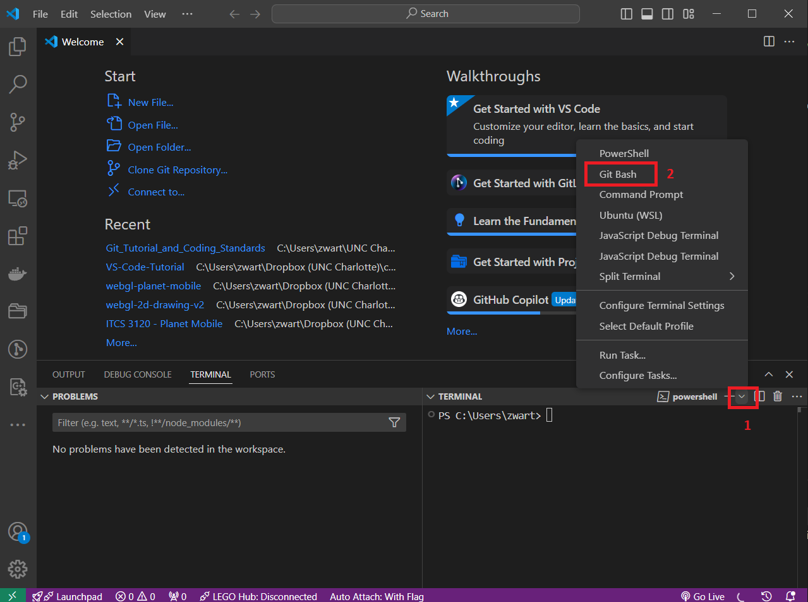
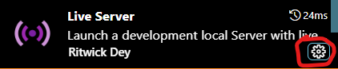

Install and configure the Visual Studio Code as required of the course.
For students without prior Visual Studio Code experience, read through the a subset of the official documentation on Visual Studio Code regarding code editing and debugging while performing a variety of simple exercises to exercise your understanding of the reading.
Document Configuration
Parts of this document are specific to particular operating systems, and particular Git servers. In general, your instructor will tell you what git server to use for your class and will tell you what operating systems are allowable in your class.
Information for some specific courses is also given below:
YourOS=ITCS 5122/4122
In this course all student submissions are to cci-git.charlotte.edu. Regarding operating systems, any OS is acceptable as long as it supports command-line git and the Chrome browser, and the VS Code IDE.
YourOS=ITCS 3120
In this course all student submissions are to cci-git.charlotte.edu. Regarding operating systems, any OS is acceptable as long as it supports command-line git, the Chrome browser, and the VS Code IDE. Note [Spring 2026]: Due to increasing number of student complaints regarding UNCC VPN access problems, students who are granted permission can use the alternate git server softspoken-sailor.metalseed.io
Using the course specific information, select the Git server and operating system you are using in the dialog below. Doing this will display the relevant sections of this document and hide the non-relevant ones.
Tutorial Structure
Part 1: VS Code Configuration: Part 1 is required. It describes the installation and configuration of Visual Studio Code with various plugins and libraries used in this course.
Part 2: Either Option I or Option II is required.
Option I: Prior Experience Survey: This option is for individuals already familiar with using VS Code's editing and debugging features. Option I is a short survey regarding the reader's prior experience with VS Code.
Option II: VS Code Tutorial : This option guides the reader through exercises and readings on VS Code's editing and debugging features.
The number of points this assignment is worth depends on what combinations of options you choose to complete. (For details see Section Rubric). Each instruction item is prefixed with, |number|, that displays the points for that item. |number| indicates that item is worth number points.
Side Note: In the above video and it's associated reading, the VS Code Integrated Terminal [View > Terminal (Ctrl+`)] lets you install and use a variety of terminals. Earlier in this course you installed git-bash. In the Terminal sub-window of the VS Code IDE, when you click on the down arrow (red box in image below), you should see bash included in listed choices of terminals. 
Extension "Live Server" In the video above you installed a VSCode extension "Live Preview". We will use a better alternative,"Live Server by Ritwick Dey" (v5.7.9 or newer). Install this VSCode extension now. After installing, adjust the following settings:
Left click the settings icon on the Live Server extension: 
In the popup menu select the menu item, Extension Settings. This will open up a window with a variety of settings for this extension
Find the setting, Live Server › Settings: Custom Browser, and in the drop down menu select the browser: "chrome."
Exercise [Remote Repo Setup]:
Create new remote repo on cci-git called,3120-t2-vs-code-tutorial using the procedures of GT: Appendix I Basic Git Operations.
Added alternate instructions for 4122/5122 which are a bit simpler than those for 3120 students.
4122/5122 student completed the original "3120" WebGL instructions, will receive full credit for Item #6.
The objective of Item #6 is primarily to test and verify that "Live Server" is working correctly.
Complete only one of the options below depending on the course you are taking:
YourClass=3120
Clone WGL PG Code In your ITCS_3120 directory, clone the WebGL Programming Guide example code:
View WGL PG Examples in VS Code In VS Code, from the main menu select File=>Open Folder and select the above folder, i.e. WebGL_Programming_Guide. This will load the code files in this directory. They will appear listed in the VS Code (left side) Explorer panel,
In the Explorer side panel, right-click the file index.html. In the pop-up menu, select Open with Live Server. Select some of links to run some of the examples.
The video below illustrates these instructions:
YourClass=5122|4122
In VS Code, from the main menu select File=>Open Folder, and open the folder vs-code-tutorial. In vs-code-tutorial create the following items:
Directory: my-first-web-page
File: my-first-web-page/index.html
Copy and paste the following code into index.html:
Add your name in the h2 header. Git add all files.
In the Explorer side panel, right-click on index.html. In the pop-up menu, select Open with Live Server. A browser window should popup showing the webpage.
git commit -m "-my-first-web-page" .
Part 2: Option I - Prior Experience Survey
You should perform this section (3. Part 2: Option I) only if you meet the criteria described in Section 1) Tutorial Structure.
Add a plain text file, survey.txt, inside your local repo directory ~/ITCS_3120/vs-code-tutorial. In that file create a numbered list, and list each course or extra-curriculla project in which you previously used Visual Studio Code.
Git Push: Don't forget to git push all your work to your remote repository
You are done with this tutorial.
Part 2: Option II - Visual Studio Code IDE
You should perform this section (4. Part 2: Option II) only if you meet the criteria described in Section 1) Tutorial Structure.
Retrieve the skeleton code: (The mechanics below are common git technique called 'fork'ing).
cd vs-code-tutoriallucretius@CCIWD-435B-1 ~/ITCS_3120/vs-code-tutorialgit remote add upstream https://github.com/ZacharyWartell/vs-code-tutorial.git[... the above connects to the original 'upstream' remote, to which you have read-only access ...] lucretius@CCIWD-435B-1 ~/ITCS_3120/vs-code-tutorialgit fetch upstream remote: Counting objects: 30, done. remote: Compressing objects: 100% (28/28), done. remote: Total 30 (delta 11), reused 0 (delta 0) [... ] git merge upstream/main --allow-unrelated-histories [... the above 2 commands merge the 'upstream' remote into the local repo...]
Push the skeleton code to your repo.
lucretius@CCIWD-435B-1 ~/ITCS_3120/vs-code-tutorial/vs-code-tutorial$git push -u origin main Counting objects: 30, done. Delta compression using up to 8 threads. [... this pushes the local repo to your remote repo and ensures further git operations will default to using your remote ...]
Exercise [VSC:Code editing in Visual Studio Code]: Watch the video, https://code.visualstudio.com/docs/introvideos/codeediting, and perform all the video's instructions. You will add the files you create during the video to git in the next step.
Exercise[app.js]:
In VS Code, open a new window and open the folder ITCS_3120/vs-code-tutorial/
Create a subdirectory called ITCS_3120/vs-code-tutorial/hello-world .
When you followed the above video's instructions, you created a file app.js. Copy that file to ITCS_3120/vs-code-tutorial/hello-world
git commit -m "-hello-world" .
Exercise[another app.js]:
In VS Code, edit the file first/app.js. Modify the file app.js so that the message printed to the console introduces yourself.
git commit -m "-first/app.js" .
Exercise [VSC:Basic Editing]: The VSC article https://code.visualstudio.com/docs/editor/codebasics covers in detail VS Code's code editing UI. The exercises below guide the reader through a subset of the sections of the article and then provide short exercises to do based on the reading.
[VSC: keyboard shortcuts] Read this section, you may follow the hyper links if you want to.
Exercise: [Multi Cursor Modifier] In VS Code, edit the file basic-editing/frogStory.html. Use the multi-cursor to change the file frogStory.html as follows:
Modify frogStory.html's section in a manner similar to the '.global-message-list' example in "Multi Cursor Modifier".
Modify frogStory.html's 'The quick green frog' section in a manner similar to the 'The quick brown fox' example in "Multi Cursor Modifier".
git commit -m "-Multi Cursor Modifier" .
[VSC: Shrink/expand selection] Read all. In VS Code, play with this feature in frogStory.html frogStory.html in a manner analogous to the two examples in this VSC section.
Exercise: [column box selection] Use column box selection to change the mis-spelled Ascii Art of "Computer Science" in frogStory.html to be spelled properly.
git commit -m "-column box selection" .
[VSC: Save/Auto Save] Read and explore the "Save/Auto Save" settings in your VS Code.
Exercise: [a-program-from-an-earlier-course]: Create a directory basic-editing/a-program-from-an-earlier-course. Copy any short program that you wrote in any previous course in any programming language into directory basic-editing/a-program-from-an-earlier-course You will use this program to play with and learn the VS Code editor features described in the remaining instructions.
Add a file a-program-from-an-earlier-course/README.md. Edit the file to include a brief description of (1) what course you wrote this previous program in and (2) what the program does.
git add and commit the files with message: git commit -m "-a-program-from-an-earlier-course" .
Use the Find and Replace feature to rename 5 different variables and/or function names in your code in a-program-from-an-earlier-course.
git commit -m "-find and replace" .
[VSC: Search across files] . This is slightly more advanced. You may either read and explore it now, or bookmark this section to read at some later time as you start using VS Code for a later course projects.
[VSC: Search Editor] . In "Search Editor" read up to but not including subsection "Search Editor commands and arguments". Exercise: ["Search Editor"]
As described in the "Search Editor", use the Open New Search Editor button at the top of the Search view.
In the search box, enter the name of a class, variable or function name that is referenced multiple times in your code in a-program-from-an-earlier-course.
Take a screen shot of the resulting search window. Save the screen shot at as an PNG image file called "search-editor" inside directory a-program-from-an-earlier-course.
Create a new class (or data structure) to the code file in your a-program-from-an-earlier-course. Add a number of properties and methods to the class. (You may name the class and properties anything you want).
Create a new function in the code file in your a-program-from-an-earlier-course. (You can name the function anything you want).
Inside the above new function, allocate several instances of the new class you added. Add 10 statements to the function that either assign values to these objects' properties or call their methods. While doing so, explore how the Intellisense feature automatically shortens the amount of typing you need to do in order to enter the property and method names.
If necessary, search the Marketplace for a formatter for the programming language your code in a-program-from-an-earlier-course is written in and install the extension.
Experiment with your newly added class, functions, etc. (copy and pasting from you own code is fine) and practice using the Format Selection and Format Document commands.
Experiment with the folding commands on your a-program-from-an-earlier-course code
Take 3 screen shots of your code with different levels of folding. Save those screen shots as 3 PNG files called "fold1.png", "fold2.png" and "fold3.png" in your a-program-from-an-earlier-course directory.
git commit -m "-folding" .
[VSC: Indentation] . Read "Indentation" and explore how changing the indentation settings affects the display of your code.
[VSC: File Encoding Support] . Read "File Encoding Support." In future projects and assignments you may occasionally need to adjust the file encoding.
Double check that any changes you made to your a-program-from-an-earlier-course above have been properly git add'ed and commit.
Exercise [VSC:Debugging]: The VSC article https://code.visualstudio.com/docs/editor/debugging covers in detail VS Code's code debugging user interface. The exercises below guide you through a subset of this VSC article and then gives you short exercises to do based on the reading.
Use Live Server to view frogStory.html. Observe how the Live Server browser immediately (with a minor delay) reflects the changes you make to the HTML source code when you save the file changes. While running Live Server, modify the text of the story about the frog. Have him hop, skip and perform other antics relative to the water bug.
git commit -m "-Live Server" .
[VSC:Start a debugging session] Read "Start a debugging session". Note you already installed NodeJS earlier in these tutorial. "Start a debugging session" mentions creating a simple NodeJS app. This has already been done for you, the file is in debugging/Hello. Use that directory's provided file, app.js, to test out the debugging features in "Start a debugging session". You will also use app.js to test the additional VS Code debugging features in this tutorial's following steps.
[VSC: Create a debug configuration file] - Read all, including the subsections "Add a configuration to launch.json" and "Generate a launch configuration with AI".
Apply these instructions in order create a NodeJS launch.json file for the files you have in debugging/Hello. Note, your launch.json will be slightly different than the VSC chapter's launch.json.
[VSC: Launch versus attach configurations] - Read all. (Only read this section, stopping before the next section "Launch.json attributes"). The distinction between launch versus attach configurations is important for later course assignments, and general usage of VS Code for variety of programming languages.
The next tutorial step returns back to Chapter "Debug code with Visual Studio Code".
[VSC: Debug actions] Again, this section is back in chapter "Debug code with Visual Studio Code"
Read section Debug actions. It covers the different debug actions. Play with the code in debugging/Hello, until you understand how each different debug action works.
[VSC:Data inspection] Read all of this section and it's sub-sections, but stop before the next section ("Multi-target debugging")
In Data inspection and it's subsections, read about the different data inspections tools. Play with the debugging/Hello code, until you understand the data inspections tools.
Take at least 1 screen shot of the data inspections tools when you are inspecting the code in debugging/Hello. Save the image as a PNG file called "inspection" in debugging/Hello.